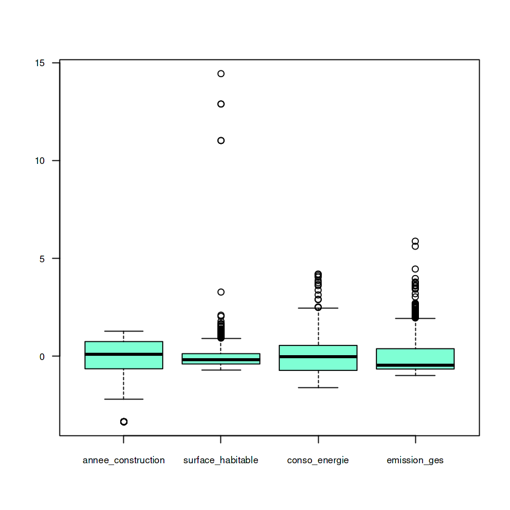
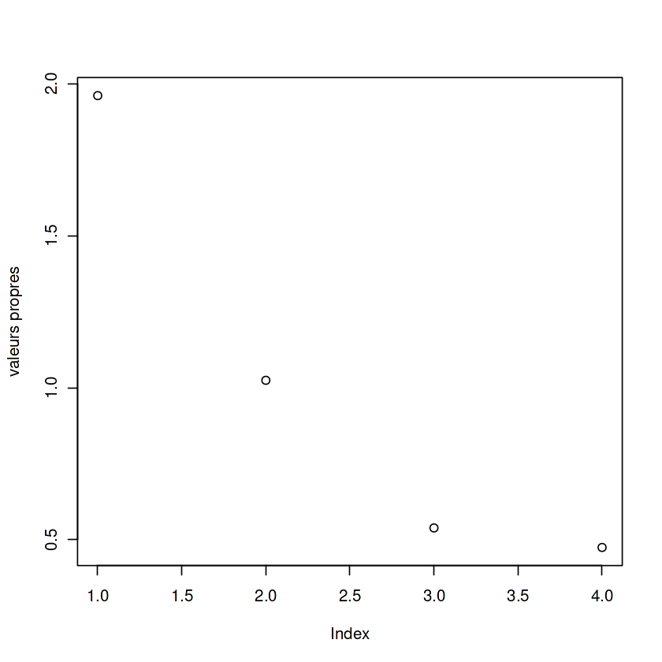
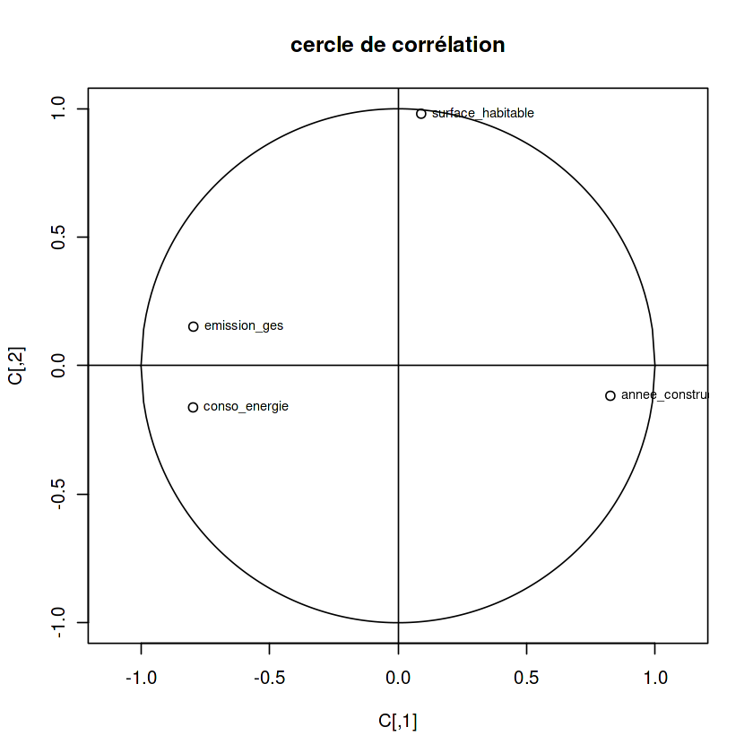

Les variables sélectionnées pour cette étude sont les suivantes :- type_logement : type du logement (1 = appartement, 2 = maison) — variable qualitative.- annee_construction : année de construction du logement — variable quantitative.- surface_habitable : surface habitable en mètres carrés — variable quantitative.- type_energie_chauffage : type d’énergie utilisée pour le chauffage (1 = gaz, 2 = électricité, 3 = autre) — variable qualitative.- conso_energie : consommation énergétique annuelle en kWhEP/m² — variable quantitative.- classe_conso_energie : classe de consommation énergétique (de A à G) — variable qualitative.- emission_ges : émissions de gaz à effet de serre en kg éq.CO₂/m² — variable quantitative.
Min. 1st Qu. Median Mean 3rd Qu. Max.
1.00 15.00 32.00 34.58 51.00 121.00
Xem code R/Python
anciennete <- data_dpe$ancienneteround(sd(anciennete))cv=round((sd(anciennete)/mean(anciennete))*100) # cv = coeff de variationcv
26
75
Xem code R/Python
par(cex.main=1.5, cex.lab=1.3, cex.axis=1.2)hist(data_dpe$anciennete, main ="Distribution de l'ancienneté des logements", xlab ="Ancienneté (années)", ylab ="Fréquence", col ="skyblue",border ="white")# Calculer moyenne et medianmoyenne <- mean(data_dpe$anciennete)mediane <- median(data_dpe$anciennete)# Ajouter une ligne pour la moyenne (rouge)abline(v = moyenne, col ="red", lwd =2)text(moyenne, par("usr")[4]*0.9, labels = paste0("Moyenne = ", round(moyenne,1)),col="red", pos=4)# Ajouter une ligne pour la médiane (vert)abline(v = mediane, col ="green", lwd =2)text(mediane, par("usr")[4]*0.8, labels = paste0("Median = ", mediane),col="green", pos=4)
Min. 1st Qu. Median Mean 3rd Qu. Max.
27.92 114.73 181.16 184.12 238.25 591.35
96.8919051506307
100
Xem code R/Python
hist(data_dpe$conso_energie, main ="Distribution de la consommation del'énergie",xlab ="énergie consommé", ylab ="Fréquence")boxplot(data_dpe$conso_energie, main ="Distribution de la consommationde l'énergie", xlab ="énergie consommé", ylab ="Fréquence",col ="lightgreen")
Min. 1st Qu. Median Mean 3rd Qu. Max.
2.000 8.602 12.695 21.933 30.000 143.360
20.6491550904522
94
Xem code R/Python
hist(data_dpe$emission_ges, main ="Distribution de la consommation degaz à effet de serre",xlab ="consommation de gaz à effet de serre",ylab ="Fréquence")boxplot(data_dpe$emission_ges, main ="Distribution de la consommationde gaz à effet de serre",xlab ="consommation de gaz à effet de serre",ylab ="Fréquence",col ="lightblue")
barplot(table(data_dpe$type_energie_chauffage), main ="Distribution du type de l'energie chauffage" ,xlab ="Type de de l'énergie chauffage" ,ylab="Frequence",col=c("lightpink","slategray1","coral4"))
m<-colMeans(data)s<-apply(data,MARGIN=2,FUN='sd')I<-rep(1,nrow(data))M<-I%*%t(m);S<-I%*%t(s);X<-(data-M)/Sboxplot(X,las=1,cex.axis =0.75, col ="aquamarine")

3.2 Valeur propre et inertie
3.2.1 La matrice des covariances
Xem code R/Python
X<-as.matrix(X)# pour éviter les problèmesV<-cor(X)round(V,2)
A matrix: 4 × 4 of type dbl
annee_construction
surface_habitable
conso_energie
emission_ges
annee_construction
1.00
-0.01
-0.49
-0.51
surface_habitable
-0.01
1.00
-0.13
0.02
conso_energie
-0.49
-0.13
1.00
0.44
emission_ges
-0.51
0.02
0.44
1.00
3.2.2 Les valeurs propres
Xem code R/Python
E<-eigen(V,symmetric=TRUE)round(E$values,2)
1.96
1.02
0.54
0.47
Xem code R/Python
plot(E$values,ylab='valeurs propres')

Xem code R/Python
cumsum(E$values)/ncol(X)
0.490331114702285
0.746522126628367
0.881285788692373
0.999999999999999
Méthode 1
Xem code R/Python
# Matrice des vecteurs propres (eigenvectors) arrondie à 2 décimalesround(E$vectors,2)# Coordonnées dans la nouvelle baseY<-X%*%E$vectors# calcul des corrélations avec la formule: k=2D<-diag(sqrt(E$values))C=E$vectors%*%D[,1:k]; # méthode directe: C2=cor(X,Y[,1:k])C2-C # vérification
A matrix: 4 × 4 of type dbl
0.59
-0.12
0.06
0.80
0.06
0.97
-0.21
0.11
-0.57
-0.16
-0.67
0.45
-0.57
0.15
0.71
0.39
A matrix: 4 × 2 of type dbl
annee_construction
-2.220446e-16
1.249001e-16
surface_habitable
8.326673e-17
1.554312e-15
conso_energie
2.220446e-16
-1.110223e-16
emission_ges
2.220446e-16
2.220446e-16
Xem code R/Python
plot(C,main='cercle de corrélation',ylim=c(-1,1),xlim=c(-1,1),asp =1 )text(C,labels=colnames(X),pos=4,cex=0.7) # ajout des labels aux points# on ajoute le cercle et les deux axesx<-seq(-1,1,0.01)lines(x,sqrt(1-x^2))lines(x,-sqrt(1-x^2))abline(h=0)abline(v=0)

Méthode 2: On fait avec les packages FactoMineR,factoextra
Xem code R/Python
library(FactoMineR)library(factoextra)
Loading required package: ggplot2
Welcome! Want to learn more? See two factoextra-related books at https://goo.gl/ve3WBa
Relations entre les variables (Corrélations)La distance et l’angle entre les points (variables) indiquent leur niveau de corrélation :- Corrélation positive : emission_ges (émissions de gaz à effet de serre) et conso_energie (consommation d’énergie) sont très proches l’une de l’autre. Cela signifie qu’elles sont positivement corrélées : les logements qui consomment beaucoup d’énergie ont généralement des émissions élevées.- Corrélation négative : annee_construction (année de construction) est situé à l’opposé du groupe énergie/émissions par rapport au centre du cercle (selon l’axe horizontal). Cela suggère que les bâtiments plus anciens (année de construction plus faible) ont tendance à consommer davantage d’énergie et à émettre plus de gaz à effet de serre.- Indépendance (absence de corrélation) : surface_habitable (surface habitable) est proche de l’axe vertical, formant un angle proche de 90° avec les autres variables. Cela signifie que, dans cet ensemble de données, la surface du logement est peu liée à l’année de construction ou à la performance énergétique par unité de surface.
4. Analyse des correspondances multiples (ACM)
Xem code R/Python
maison <- data_dpedata1 <- maison[, c("type_logement","type_energie_chauffage","classe_conso_energie")]summary(data1)
type_logement type_energie_chauffage classe_conso_energie
appartement:639 gaz :433 Length:1000
maison :361 électricité:542 Class :character
autre : 25 Mode :character
On va faire le test pour savoir si la classe de consommation dépend-elle du type de chauffageHypothèse:-H0: La classe de consommation indépendante du type de chauffage.-H1: La classe de consommation dépend du type de chauffage.
Xem code R/Python
type_energie_chauffage <-data_dpe$type_energie_chauffageclasse_conso_energie <- data_dpe$classe_conso_energiebarplot(table(type_energie_chauffage,classe_conso_energie),beside=TRUE, col=c("blue","green","red"), main="Classe conso energie par type chauffage" ,xlab="classe conso energie" ,ylab="Fréquence ",legend.text=TRUE)
5.2.1 Tester s’il y a une différence réelle de consommation énergétique moyenne entre Maison et Appartement.
On va faire le test pour savoir justifier la relation entre le type de logement et la consommation d’énergie - H0: Il n’y a pas de différence moyenne de consommation énergétique entre Maison et Appartement (toute variation observée est due au hasard) - H1: Il existe une différence réelle de consommation énergétique moyenne entre Maison et Appartement.
Xem code R/Python
anova_result <-aov(conso_energie ~ type_logement, data = maison)summary(anova_result)
Df Sum Sq Mean Sq F value Pr(>F)
type_logement 1 103182 103182 11.1 0.000894 ***
Residuals 998 9275471 9294
---
Signif. codes: 0 ‘***’ 0.001 ‘**’ 0.01 ‘*’ 0.05 ‘.’ 0.1 ‘ ’ 1
Xem code R/Python
aggregate(conso_energie ~ type_logement, data = maison, mean)
A data.frame: 2 × 2
type_logement
conso_energie
<fct>
<dbl>
appartement
176.4841
maison
197.6335
5.2.2 Tester si les moyennes des émissions de GES sont identiques selon le type d’énergie de chauffage.
On va faire le test pour savoir justifier les moyennes des émissions de GES sont identiques selon le type d’énergie de chauffage.- H0: Les groupes ont des moyennes d’émissions égales.- H1: Au moins un groupe a une moyenne différente.
Xem code R/Python
moycond <-tapply(data_dpe$emission_ges, data_dpe$type_logement, mean, na.rm=TRUE)boxplot(emission_ges ~ type_energie_chauffage,data = data_dpe,main ="Émissions de GES selon le type de chauffage",xlab ="Type de chauffage",ylab ="Émissions GES (kg éq. CO2/m2)")# ajouter le point de moyenpoints(1:length(moycond), moycond, col="red", pch="*", cex=2)
One-way analysis of means (not assuming equal variances)
data: emission_ges and type_energie_chauffage
F = 219.53, num df = 2.000, denom df = 61.494, p-value < 2.2e-16
5.3 Tests t de Student par paires
On va vérifier si les moyennes des émissions de GES diffèrent selon le type d’énergie de chauffage.- H0: Les groupes ont des moyennes d’émissions égales.- H1: Au moins un groupe a une moyenne différente.
Pairwise comparisons using t tests with non-pooled SD
data: data_dpe$emission_ges and data_dpe$type_energie_chauffage
gaz électricité
électricité < 2e-16 -
autre 0.0053 1.8e-06
P value adjustment method: none
Comparaison par paires des groupes d’énergie :- Gaz vs Électricité → p < 2e-16 → différence extrêmement significative- Gaz vs Autre → p = 0,0053 → différence significative- Électricité vs Autre → p = 1,8e-06 → différence extrêmement significativeConclusion : toutes les paires de groupes d’énergie présentent des différences significatives au niveaudes émissions.